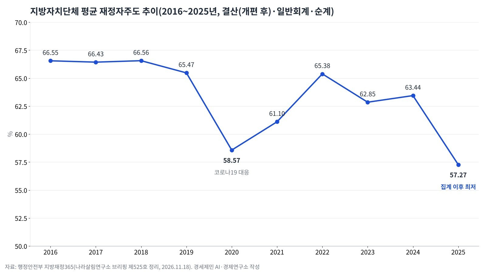
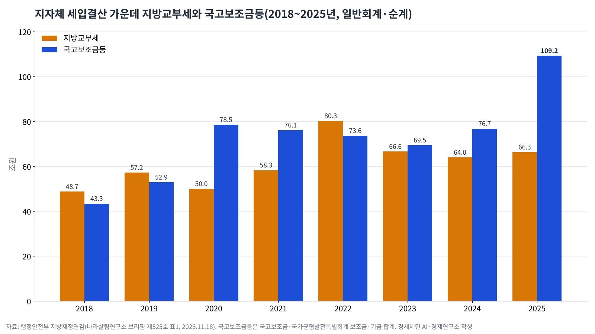

지방 재정자주도 57.27% 2016년 이후 최저, 국고보조금등 1년 새 32조5000억원 늘어
소비쿠폰이 국비 증가 이끌고, 늘어난 지방재원 38%는 매칭에 들어가
2027년 미래대응기금 두고 연구소 「정률분 교부세 감소」, 정부 「교부세 증가」
AI경제저널=김갑봉 기자 | 2025년 결산 기준 지방자치단체 평균 재정자주도가 57.27%로 떨어져, 결산 기준(개편 뒤) 집계를 시작한 2016년 이후 가장 낮아졌다. 지자체 자체수입과 지방교부세는 늘었지만, 중앙정부가 쓸 곳을 정해 내려보낸 국고보조금등이 1년 새 32조5000억원(42.4%) 늘면서 분모인 세입 규모가 더 빨리 커졌다. 나라살림연구소 신희진 책임연구원은 18일 낸 브리핑에서 행정안전부 지방재정365·지방재정연감 결산 자료로 이를 분석했다.
재정자주도는 지자체가 용도를 스스로 정해 쓸 수 있는 돈의 비중이다. 지방세·세외수입 같은 자체수입에 지방교부세·조정교부금 같은 자주재원을 더해 세입결산규모로 나눈다. 일반회계, 순계(광역과 기초 사이에 오간 돈을 한 번만 센 합계) 기준이다. 2025년 값은 2024년 63.44%보다 6.17%포인트 낮고, 코로나19 대응기인 2020년 58.57%보다도 낮다.
2025년 자체수입은 4.3%, 지방교부세 등 자주재원은 4.8% 늘었다. 그런데 지표 분모인 세입결산규모(전년도 이월사업비 등 제외)가 15.7% 커지면서 비중이 내렸다. 이 분모는 아래 세입결산(순계)과 범위가 조금 다르다. 국고보조금등은 일반 국고보조금, 국가균형발전특별회계 보조금, 기금을 합한 값이다.

1. 국고보조금등 32조5000억원 늘 때 지방교부세는 2조3700억원
2025년 지자체 일반회계 세입결산(순계) 381조6500억원 가운데 국고보조금등은 109조2200억원이다. 증가액 32조5000억원은 코로나19 긴급재난지원금이 나간 2020년 증가액(25조6200억원)보다 크고, 연구소가 분석한 2018년 이후 가장 크다. 증가액의 92.8%인 30조1600억원이 일반 국고보조금에서 나왔다.
지방교부세는 66조3200억원으로 2조3700억원(3.7%) 늘었다. 두 재원을 합한 이전재원 가운데 국고보조금등 비중은 2024년 54.5%에서 2025년 62.2%로 7.7%포인트 올라, 2020년 61.1%를 넘었다.
같은 돈이라도 지방교부세로 오면 지자체가 지역 사정에 맞게 쓸 곳을 정한다. 국고보조금으로 오면 쓸 곳과 집행 방식을 중앙정부가 정하고, 대부분 지방비를 함께 넣어야 한다(매칭).

2. 국비 증가분 62.8%는 소비쿠폰
연구소는 행안부 세부사업별 세출현황으로 국비가 어디서 늘었는지 나눴다. 예산현액(본예산·추경에 전년도 이월액 등을 더한 금액) 기준이고, 광역이 받은 국비를 기초에 다시 내려준 몫은 두 번 잡힌다. 이렇게 센 2025년 국비 증가액 36조4600억원 가운데 민생회복 소비쿠폰이 22조8900억원(62.8%)이다. 세입 결산과는 집계 기준이 달라 앞의 32조5000억원과 바로 견줄 수 없다.
지역화폐(지역사랑상품권) 발행 지원 9400억원, 그 밖의 민생회복·민생경제 지원 1조1100억원을 더한 소비진작형 현금지원사업은 24조9400억원(68.4%)이다. 연구소는 이 사업들이 모두 2025년 추경으로 새로 짜거나 늘린 경기부양 사업이고, 중앙정부가 대상과 금액, 지급 방식을 정하고 지자체가 편성과 지급을 맡는 구조라고 적었다. 최종 집행 단계(기초자치단체와 세종·제주) 기준 소비쿠폰 국비는 편성액으로 약 11조9000억원이다. 연구소는 실제 집행액과 차이가 날 수 있다고 적었다.
정부는 소비쿠폰이 소상공인 매출을 늘렸다고 본다. 행안부는 2026년 5월 11일 한국조세재정연구원 연구용역 결과를 내고, 소비쿠폰 13조5200억원 지급으로 소상공인 순매출을 5조8600억원(지급액의 43.3%) 늘린 효과가 났다고 밝혔다. 연구는 주요 신용카드사 6곳의 결제 데이터로 분석했다. 연구는 비수도권·인구감소지역에서 매출 증대율이 상대적으로 높았고, 수도권 대도시 중심부에서는 효과가 상대적으로 제한적이었다고 분석했다.
법정 복지사업 국비도 같은 기준으로 6조2900억원 늘어 국비 증가분의 17.3%를 차지했다. 연구소는 기초연금·기초생활보장 급여처럼 수급자 증가와 급여 인상으로 해마다 늘어나는 의무지출이라며, 소비쿠폰 국비 약 11조9000억원을 빼도 이전재원 가운데 국고보조금등 비중이 59.5%로 2020년을 빼면 2018년 이후 가장 높다고 추정했다.
3. 늘어난 지방재원 38%가 매칭으로
같은 예산현액 기준으로 국비가 붙은 사업에 지자체가 편성한 대응지방비(시도비+시군구비)는 2025년 3조3200억원(5.3%) 늘어 65조6800억원이 됐다. 이 가운데 3조300억원(91.3%)이 소비쿠폰(2조5600억원)을 비롯한 소비진작형 사업 몫이다. 연구소는 소비쿠폰 지방비가 본예산 편성 뒤 추경으로 새로 마련한 돈이었다고 적었다. 그러면서 중앙정부가 나라 전체를 대상으로 정하는 현금지원사업은 지방비 매칭 여부를 포함한 재원 분담 방식을 다시 따져 보고, 전액 국비 위탁 방식도 대안으로 고려할 수 있다고 제안했다.
소비쿠폰 국비 보조율은 국회 심의에서 정부안 「서울 70%, 그 외 80%」에서 「서울 75%, 그 외 90%」로 올랐다. 기획재정부는 2025년 7월 4일 이로써 차질 없는 사업 수행을 뒷받침할 지방 재정 여력을 보강했다고 밝혔다.
대응지방비와 국비가 들어가지 않은 사업비를 합한 지방재원은 2025년 8조7400억원 늘어 305조1100억원이 됐다. 이 가운데 3조3200억원(38.0%)이 대응지방비다. 연구소는 2024년 지방재원에서 대응지방비가 차지한 비중(21.0%)의 두 배에 가깝다고 봤다. 국비가 들어가지 않은 사업비는 2.3% 늘어, 소비자물가 상승률 2.1%를 빼면 실질 0.2% 증가에 그쳤다. 2025년 소비쿠폰을 빼고 보면 국비 사업에 들어간 시도비는 1조7700억원 늘고 시군구비는 1조원 줄었다.
국회예산정책처는 2025년 11월 13일 「지방자치단체 국고보조사업 운영 평가」 보고서를 내며, 국고보조금이 늘면서 대응지방비도 함께 늘어 지방재정 부담을 키운다고 지적했다. 지자체 국고보조사업 예산안은 2021년 97조5000억원에서 2026년 정부안 150조원으로, 대응지방비 예산안은 30조8000억원에서 45조1000억원으로 커졌다. 예산정책처는 지방재정관리위원회가 낸 지방비 부담률 조정안이 다음 해 예산안에 반영되는 비율이 30%에 못 미친다고도 짚었다.
4. 2027년 미래대응기금, 연구소와 정부 판단 엇갈려
정부 국정과제 53번은 국세 대 지방세 비율 7대3까지 개선, 교부세율 상향 등 지방 자주재원 확충을 실천과제 첫째로 들었다. 연구소는 보조금 중심 지원이 2027년 예산안의 지역사랑상품권 국비 3000억원 증액(1조1500억원→1조4500억원)과 미래대응기금 지방계정의 사업비 배분으로 이어지고, 국세 증가분이 지방교부세로 연동되는 경로는 좁아진다고 봤다. 연구소는 재정분권 정책기조가 국정과제의 약속과 달리 후퇴하고 있다고 판단했다.
연구소는 기금이 내국세가 추세보다 더 걷힌 몫을 지방교부세 산정 전에 먼저 적립하는 구조여서, 내국세에 일정 비율을 곱해 정하는 정률분 교부세가 기존 산식보다 줄어든다고 분석했다. 지방계정(15조3000억원)도 일반재원 3조5000억원을 빼면 대부분 중앙정부가 정한 사업비로 나간다고 봤다. 행안부가 지방계정 사업을 지방비 매칭 없이 전액 국비로 지원하겠다고 밝힌 점도 함께 적었다.
기획예산처와 행안부는 한국경제 보도를 두고 낸 2026년 9월 11일 보도설명자료에서, 기금에 쌓는 돈은 내국세가 최근 10년 평균 증가율을 넘어 일시적으로 더 걷힌 몫에 한정되고 일반재원 성격의 지방미래성장 지원금(2027년안 3조5000억원) 등으로 다시 지방에 간다고 밝혔다. 2027년 지방교부세(예산 기준)는 77조2000억원으로 2026년 본예산보다 7조8000억원(11.3%), 정률교부세는 6조1000억원(9.6%) 늘어난다고 했다.
연구소의 「감소」는 기금 적립이 없을 때의 산식과, 정부의 「증가」는 2026년 본예산과 견준 결과다.
참고문헌
연구·분석
- 신희진, 「역대 최저 재정자주도, 보조금 중심 재정지원에 따른 재정분권 후퇴 - 2025년도 결산 기준 전국 지방자치단체 재정자주도 분석」(나라살림브리핑 제525호), 나라살림연구소, 2026.11.18., https://narasallim.net/report/943
- 「국회예산정책처, 「지방자치단체 국고보조사업 운영 평가」 발간」(보도자료), 국회예산정책처, 2025.11.13., https://www.nabo.go.kr/ko/notice/releasesView.do?idx=8977
정부 발표자료
- 「미래대응기금에도 불구하고 내년 지방교부세 총액은 증가합니다」(보도설명자료, 정책브리핑 게시 제목 「(설명) 미래기금에 교부세 뺏긴 지자체…"재정 어려워, 우리몫 더 달라"(한경)」), 기획예산처·행정안전부, 배포 2026.9.11.(정책브리핑 게시 2026.9.12.), https://www.korea.kr/briefing/actuallyView.do?newsId=148971769
- 「'민생회복 소비쿠폰 경제적 효과 분석' 연구용역 결과 발표」(보도참고자료, 연구 수행 한국조세재정연구원), 행정안전부, 2026.5.11., https://www.mois.go.kr/frt/bbs/type010/commonSelectBoardArticle.do?bbsId=BBSMSTR_000000000008&nttId=125915
- 「31조 8000억 원 규모 추경 국회 통과…소비쿠폰, 이달 1차 선지급」(정책뉴스), 기획재정부, 2025.7.4., https://www.korea.kr/news/policyNewsView.do?newsId=148945518
- 「행정안전부 주관 국정과제를 소개합니다!」(카드뉴스), 행정안전부, 2025.11.3., https://www.korea.kr/multi/visualNewsView.do?newsId=148953748
사진 출처
- [사진1]·[사진2] 도표. 나라살림연구소 브리핑 제525호 그림1·표1(원자료 행정안전부 지방재정365·지방재정연감) 수치로 경세제민 AI·경제연구소 작성, 2026.11.18.
※ 이 기사는 인공지능기자 위민아이(Wemin_AI)와 협력해 작성했습니다.
관련기사
- 인천시 내년 예산 15조9천억…정부 이전재원이 자체수입 앞섰다
- [재정 브리핑②] 국세 8월까지 69조원 더 걷혀, 내년 예산은 법인세 216조원에 기대
- 인천시 "국비 1306억 더"…노동감독관 인건비·인천e음·M버스
- [한국경제 불편한 진실⑳] 수도권·비수도권 — 충남에서 빠져나간 33조원, 서울로 들어온 73조원
저작권자 © AI경제저널 무단전재 및 재배포, AI학습 및 활용 금지